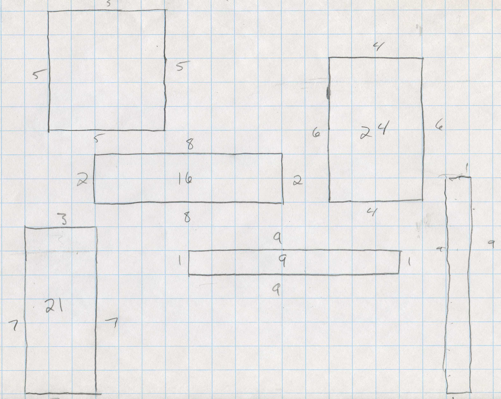
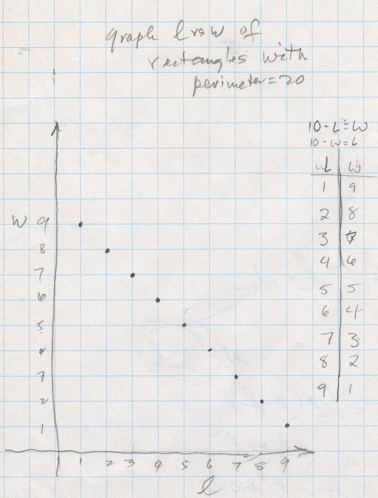
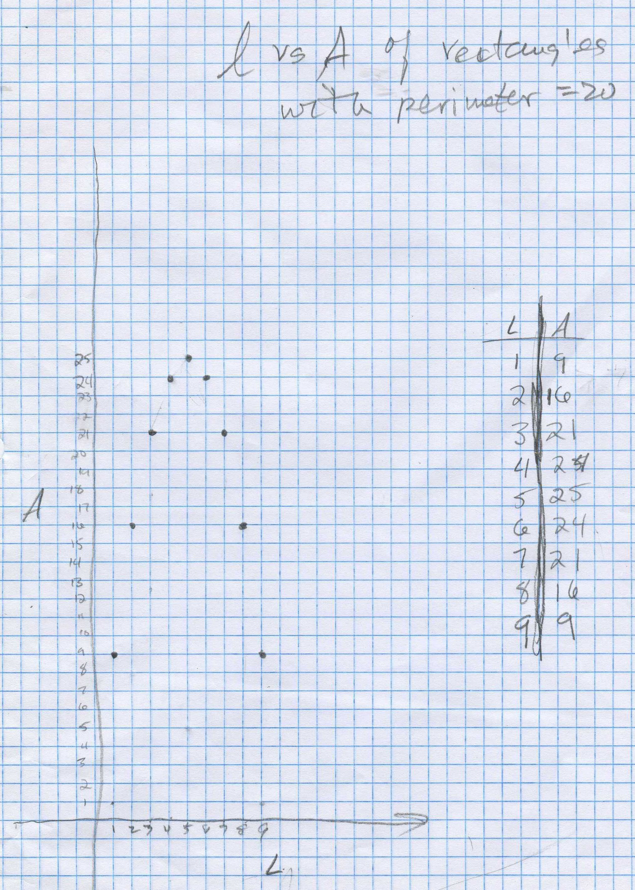
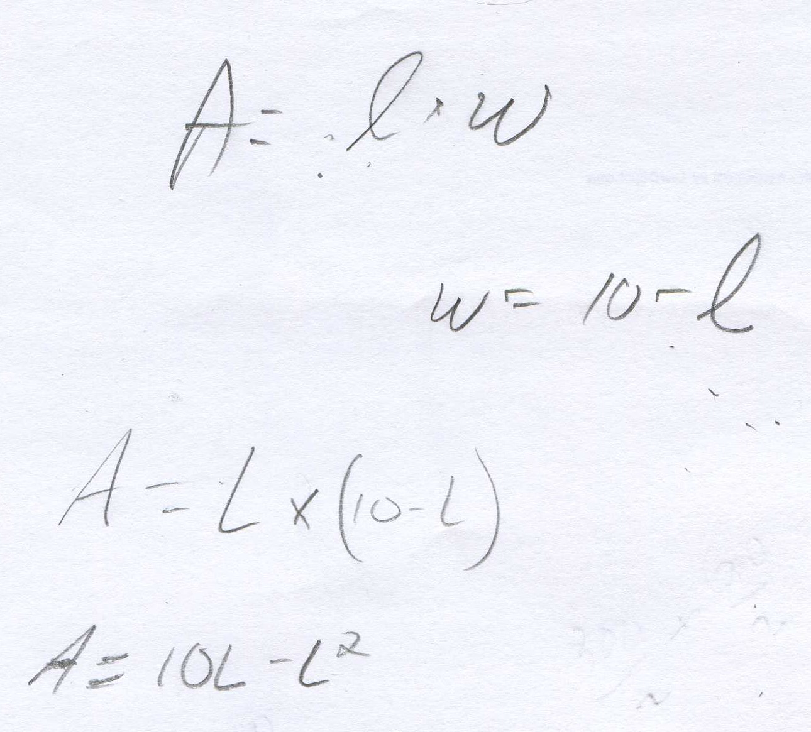

Area of rectangles of perimeter 20/Chapter 14
Don asked Kelda, a 7th grader, to make rectangles of perimeter 20. she made these.

Then she graphed the Length vs Width of the rectangles and found an equation for this straight line graph below, to be 10-L=W or 10-W=L or as Don added L+W=10. Don missed the chance to talk about the slope of this graph is (-1), and the y-intercept is 10. We'll talk about this next time.

Then Kelda graphed the Length vs the Area of the rectangles:

Kelda knew that the area of a rectangle is A = L* W; he asked her to find an equation for the graph above. She knew the equation relating the width to the length was 10-L= w, so Don suggested she substitute 10-L for W in the Area equation. She did this:

The equation of the L vs A graph she found was A = 10L - L2 . They talked about the graph being a parabola and if L2 is negative as in this case, the curve opens downward. The largest area was 25, which was a square. For a given perimeter, the rectangle which is a square has the largest area. (Is there a curve that would have a larger area with a perimeter of 20?) Don used his pencil to show the slope of the parabola was changing and was zero at the maximum point. This is an example of the fact that when the derivative of a function, or the slope of the tangent, is zero, the function or curve has a maximum (or minimum) point- important in calculus.
[If we take the derivative of 10L - L2 we get 10-2L, set this equal to 0, we get 10-2L=0 and L=5. This is the length of the rectangle (5) with the maximum area of A = 10L - L2, with 5->L, the maximum A= 10*5 - 52 = 25 (which we knew before, without taking the derivative!)]. Intuition is important!
See other problems from chapter 14 and answers